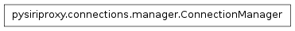

The manager module
The manager module contains the ConnectionManager class which is
responsible for managing the ability to transfer data between two
different connections.
The ConnectionManager class

-
class pysiriproxy.connections.manager.ConnectionManager(logger=None)[source]
The ConnectionManager object managers incoming connection
directions and provides the ability to forward data between them.
It allows a connection direction to be connected to an opposite
connection direction which allows data to be forwarded from the
direction to the connected direction.
-
connect(connection)[source]
Add a connection to our set of connections.
- connection – The connection object to add
-
disconnect(direction)[source]
Remove a directed connection from our set of connections.
- direction – The direction of the connection object to remove
-
forward(direction, data)[source]
Forward the data from one connection to another.
- direction – The direction of the data
- data – The data to forward
-
getConnection(direction)[source]
Get the connection for the specific direction.
- direction – The direction for the connection to retrieve
-
getForwardName(direction)[source]
Get the formatted name of the forward direction for the
given direction.
- direction – The data direction
-
getRefId(direction)[source]
Get the most recently used reference id for the connection with
the given direction.
- direction – The direction for the connection
-
hasConnection(direction)[source]
Determine if there is a connection to forward data to.
- direction – The incoming data direction
-
injectObject(direction, obj)[source]
Inject an object into the connection with the given direction.
- direction – The direction to inject the object
- obj – The object to inject
-
resetConnections()[source]
Reset all of the connections that are being managed.
-
setRefId(refId, direction)[source]
Set the ref id for the forward connection.
- refId – The ref id
- direction – The data direction